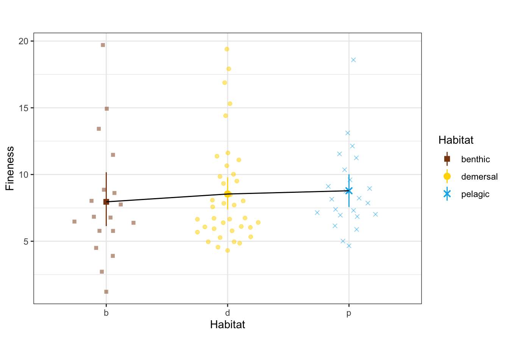

Last updated: 2022-10-23
Checks: 7 0
Knit directory: Code/
This reproducible R Markdown analysis was created with workflowr (version 1.7.0). The Checks tab describes the reproducibility checks that were applied when the results were created. The Past versions tab lists the development history.
Great! Since the R Markdown file has been committed to the Git repository, you know the exact version of the code that produced these results.
Great job! The global environment was empty. Objects defined in the global environment can affect the analysis in your R Markdown file in unknown ways. For reproduciblity it’s best to always run the code in an empty environment.
The command set.seed(20211230) was run prior to running
the code in the R Markdown file. Setting a seed ensures that any results
that rely on randomness, e.g. subsampling or permutations, are
reproducible.
Great job! Recording the operating system, R version, and package versions is critical for reproducibility.
Nice! There were no cached chunks for this analysis, so you can be confident that you successfully produced the results during this run.
Great job! Using relative paths to the files within your workflowr project makes it easier to run your code on other machines.
Great! You are using Git for version control. Tracking code development and connecting the code version to the results is critical for reproducibility.
The results in this page were generated with repository version 5fd47a7. See the Past versions tab to see a history of the changes made to the R Markdown and HTML files.
Note that you need to be careful to ensure that all relevant files for
the analysis have been committed to Git prior to generating the results
(you can use wflow_publish or
wflow_git_commit). workflowr only checks the R Markdown
file, but you know if there are other scripts or data files that it
depends on. Below is the status of the Git repository when the results
were generated:
Ignored files:
Ignored: .DS_Store
Ignored: .Rhistory
Ignored: .Rproj.user/
Ignored: Flexibility Comparisons.nb.html
Ignored: Main.nb.html
Ignored: PGLS.FullData.nb.html
Ignored: PGLSforeachMeasFeature.nb.html
Ignored: PGLSwithPCA_Dims.nb.html
Ignored: PreppedVertMeas.nb.html
Ignored: ProcessCymatogasterFiles.nb.html
Ignored: ProcessFCSVfiles.nb.html
Ignored: TestingHabitatwithFriedmanData.nb.html
Ignored: Trilok_tree.nb.html
Ignored: VertLM.nb.html
Ignored: VertMeasLDA_Attempt.nb.html
Ignored: VertPGLS.nb.html
Ignored: VertPairs.nb.html
Ignored: analysis/.DS_Store
Ignored: analysis/.Rhistory
Ignored: analysis/02-CheckSpeciesMatch.nb.html
Ignored: analysis/10-VertLM.nb.html
Ignored: analysis/12-VertPGLS2.nb.html
Ignored: analysis/13-VertPGLS-MANOVA40.nb.html
Ignored: analysis/13-VertPGLS-MANOVA90.nb.html
Ignored: analysis/14-VertPGLS-MANOVA40.nb.html
Ignored: analysis/20-plot_phylogeny.nb.html
Ignored: analysis/21-plot_fits_and_summary.nb.html
Ignored: analysis/CheckSpeciesMatch.nb.html
Ignored: analysis/figure/
Ignored: caper_test.nb.html
Ignored: data/.DS_Store
Ignored: ggtree_attempt.nb.html
Ignored: output/.DS_Store
Ignored: plot_example_data.nb.html
Ignored: plot_fits_and_summary.nb.html
Ignored: plot_phylogeny.nb.html
Ignored: summarize_vert_meas.nb.html
Ignored: test_phylogeny.nb.html
Ignored: test_vertebraspace.nb.html
Ignored: vert_evol.Rproj
Untracked files:
Untracked: Archive.zip
Untracked: Main.html
Untracked: ProcessFCSVfiles.Rmd
Untracked: VertPGLS.html
Untracked: analysis/13-VertPGLS-MANOVA90.Rmd
Untracked: analysis/14-VertPGLS-MANOVA40.Rmd
Untracked: data/actinopt_12k_raxml.tre.xz
Untracked: gg_saver.R
Untracked: output/BodyDistribution.pdf
Untracked: output/MasterVert_Measurements.csv
Untracked: output/anova_table.rtf
Untracked: output/anovatabs.csv
Untracked: output/effectsizes.csv
Untracked: output/fineness.pdf
Untracked: output/habitatvals.csv
Untracked: output/manova_table.rtf
Untracked: output/mean_d_alphaPos_CBL.pdf
Untracked: output/mean_params.pdf
Untracked: output/pair_plot.pdf
Untracked: output/phylogeny_families.pdf
Untracked: output/plot_example_data_figure.pdf
Untracked: output/predvals.Rds
Untracked: output/stats_table.rtf
Untracked: output/vertdata_show_species.csv
Untracked: output/vertdata_summary_species.csv
Untracked: output/vertshape.pdf
Untracked: plot_fits_and_summary.Rmd
Untracked: summarize_vert_meas.html
Untracked: testtree.csv
Untracked: vert_tree.csv
Unstaged changes:
Deleted: .Rprofile
Modified: analysis/11-MergePhylogeny.Rmd
Modified: analysis/20-plot_phylogeny.Rmd
Modified: analysis/index.Rmd
Modified: data/MasterVert_Measurements.csv
Modified: output/MasterVert_Measurements_Matched.csv
Modified: output/vert_tree.rds
Modified: output/vertdata_centered.csv
Modified: output/vertdata_summary.csv
Deleted: renv.lock
Deleted: renv/.gitignore
Deleted: renv/activate.R
Deleted: renv/settings.dcf
Note that any generated files, e.g. HTML, png, CSS, etc., are not included in this status report because it is ok for generated content to have uncommitted changes.
These are the previous versions of the repository in which changes were
made to the R Markdown (analysis/12-VertPGLS2.Rmd) and HTML
(docs/12-VertPGLS2.html) files. If you’ve configured a
remote Git repository (see ?wflow_git_remote), click on the
hyperlinks in the table below to view the files as they were in that
past version.
| File | Version | Author | Date | Message |
|---|---|---|---|---|
| Rmd | 5fd47a7 | Eric Tytell | 2022-10-23 | wflow_publish("analysis/12-VertPGLS2.Rmd") |
| Rmd | 65e217e | Eric Tytell | 2022-09-16 | Updated code |
| Rmd | 8b12300 | Eric Tytell | 2022-09-06 | Assorted updates |
| Rmd | 01233ef | Eric Tytell | 2022-08-03 | Before update for new stats |
| Rmd | 0eac19a | Eric Tytell | 2022-07-16 | New PGLS analysis using procD |
library(tidyverse) # for everything── Attaching packages ─────────────────────────────────────── tidyverse 1.3.2 ──
✔ ggplot2 3.3.6 ✔ purrr 0.3.4
✔ tibble 3.1.8 ✔ dplyr 1.0.9
✔ tidyr 1.2.0 ✔ stringr 1.4.1
✔ readr 2.1.2 ✔ forcats 0.5.2
── Conflicts ────────────────────────────────────────── tidyverse_conflicts() ──
✖ dplyr::filter() masks stats::filter()
✖ dplyr::lag() masks stats::lag()library(geomorph) # for PGLS analysisLoading required package: RRPP
Loading required package: rgl
This build of rgl does not include OpenGL functions. Use
rglwidget() to display results, e.g. via options(rgl.printRglwidget = TRUE).
Loading required package: Matrix
Attaching package: 'Matrix'
The following objects are masked from 'package:tidyr':
expand, pack, unpack#library(emmeans) # doesn't work with geomorph
library(ggbeeswarm) # shows beeswarm points
library(ggpubr) # for effect size brackets
library(phytools) # for loading phylogeniesLoading required package: ape
Attaching package: 'ape'
The following object is masked from 'package:ggpubr':
rotate
Loading required package: maps
Attaching package: 'maps'
The following object is masked from 'package:purrr':
maplibrary(geiger) # phylogenetics - but we just use name.check
library(rstatix)
Attaching package: 'rstatix'
The following object is masked from 'package:stats':
filterlibrary(esvis) # for effect sizes
library(Hmisc) # for simple points with confidence limitsLoading required package: lattice
Loading required package: survival
Loading required package: Formula
Attaching package: 'Hmisc'
The following object is masked from 'package:ape':
zoom
The following objects are masked from 'package:dplyr':
src, summarize
The following objects are masked from 'package:base':
format.pval, unitslibrary(patchwork) # for tiling figure panels
library(gt) # for making nice tables
Attaching package: 'gt'
The following object is masked from 'package:Hmisc':
htmllibrary(here) # for locating datahere() starts at /Users/etytel01/Documents/Vertebrae/CodePackage details
R.version.string[1] "R version 4.2.0 (2022-04-22)"citation()
To cite R in publications use:
R Core Team (2022). R: A language and environment for statistical
computing. R Foundation for Statistical Computing, Vienna, Austria.
URL https://www.R-project.org/.
A BibTeX entry for LaTeX users is
@Manual{,
title = {R: A Language and Environment for Statistical Computing},
author = {{R Core Team}},
organization = {R Foundation for Statistical Computing},
address = {Vienna, Austria},
year = {2022},
url = {https://www.R-project.org/},
}
We have invested a lot of time and effort in creating R, please cite it
when using it for data analysis. See also 'citation("pkgname")' for
citing R packages.citation('geomorph')
To cite package 'geomorph' in a publication use the first two
references. If analyses with RRPP were used, cite the subsequent three
references:
Baken, E. K., M. L. Collyer, A. Kaliontzopoulou, and D. C. Adams.
2021. geomorph v4.0 and gmShiny: enhanced analytics and a new
graphical interface for a comprehensive morphometric experience.
Methods in Ecology and Evolution. Methods in Ecology and Evolution.
12:2355-2363.
Adams, D. C., M. L. Collyer, A. Kaliontzopoulou, and E.K. Baken.
2022. Geomorph: Software for geometric morphometric analyses. R
package version 4.0.4. https://cran.r-project.org/package=geomorph.
Collyer, M. L. and D. C. Adams. 2021. RRPP: Linear Model Evaluation
with Randomized Residuals in a Permutation Procedure.
https://cran.r-project.org/web/packages/RRPP
Collyer, M. L. and D. C. Adams. 2018. RRPP: RRPP: An R package for
fitting linear models to high‐dimensional data using residual
randomization. Methods in Ecology and Evolution. 9(2): 1772-1779.
As geomorph is evolving quickly, you may want to cite also its version
number (found with 'library(help = geomorph)'). Additionally, the RRPP
package should also be cited for any analyses using RRPP. (See
'library(help = RRPP)' or 'citation('RRPP')'.)
To see these entries in BibTeX format, use 'print(<citation>,
bibtex=TRUE)', 'toBibtex(.)', or set
'options(citation.bibtex.max=999)'.packageVersion('geomorph')[1] '4.0.4'packageVersion('rrpp')[1] '1.3.0'citation('esvis')
To cite package 'esvis' in publications use:
Anderson D (2020). _esvis: Visualization and Estimation of Effect
Sizes_. R package version 0.3.1,
<https://CRAN.R-project.org/package=esvis>.
A BibTeX entry for LaTeX users is
@Manual{,
title = {esvis: Visualization and Estimation of Effect Sizes},
author = {Daniel Anderson},
year = {2020},
note = {R package version 0.3.1},
url = {https://CRAN.R-project.org/package=esvis},
}packageVersion('esvis')[1] '0.3.1'vertdata <- read_csv(here('output', "MasterVert_Measurements_Matched.csv")) %>%
# separate(MatchSpecies, into=c("MatchGenus", "MatchSpecies"), sep="_") %>%
relocate(MatchSpecies, .after=Species) %>%
rename(alphaPos = alpha_Pos,
alphaAnt = alpha_Ant,
DPos = D_Pos,
DAnt = D_Ant,
BodyShape = `Body Shape`,
dBW = d_BW,
DAntBW = D_Ant_BW,
DPosBW = D_Pos_BW,
fineness = `SL/Max_BW`)Rows: 585 Columns: 56
── Column specification ────────────────────────────────────────────────────────
Delimiter: ","
chr (18): Species, Body Shape, Habitat_Initial, Habitat_Friedman, Habitat_Fi...
dbl (38): Indiv, Pos, SL, CBL_raw, alpha_Pos_raw, d_raw, D_Pos_raw, alpha_An...
ℹ Use `spec()` to retrieve the full column specification for this data.
ℹ Specify the column types or set `show_col_types = FALSE` to quiet this message.head(vertdata)# A tibble: 6 × 56
Species Match…¹ Indiv Pos SL CBL_raw alpha…² d_raw D_Pos…³ alpha…⁴
<chr> <chr> <dbl> <dbl> <dbl> <dbl> <dbl> <dbl> <dbl> <dbl>
1 Alectis_cilia… Alecti… 1 40 799 24.9 1.51 3.57 17.5 1.56
2 Alectis_cilia… Alecti… 1 50 799 34.4 1.18 3.13 21.1 1.31
3 Alectis_cilia… Alecti… 1 60 799 35.8 1.38 2 22.6 1.4
4 Alectis_cilia… Alecti… 1 70 799 36.6 1.34 0.75 22.2 1.36
5 Alectis_cilia… Alecti… 1 80 799 35.2 1.32 0.54 22.2 1.27
6 Alectis_cilia… Alecti… 1 90 799 32.8 1.31 0.49 19.4 1.28
# … with 46 more variables: D_Ant_raw <dbl>, CBL <dbl>, alphaPos <dbl>,
# d <dbl>, DPos <dbl>, alphaAnt <dbl>, DAnt <dbl>, Pt1x <dbl>, Pt1y <dbl>,
# Pt2x <dbl>, Pt2y <dbl>, Pt3x <dbl>, Pt3y <dbl>, Pt4x <dbl>, Pt4y <dbl>,
# Pt5x <dbl>, Pt5y <dbl>, Pt6x <dbl>, Pt6y <dbl>, Pt7x <dbl>, Pt7y <dbl>,
# BodyShape <chr>, Habitat_Initial <chr>, Habitat_Friedman <chr>,
# Habitat_FishBase <chr>, Habitat <chr>, Water_Type <chr>, Max_BW_mm <dbl>,
# BW_slide <dbl>, Max_BH_mm <dbl>, BH_slide <dbl>, dBW <dbl>, DPosBW <dbl>, …Pull out the landmarks for each vertebra and scale each to body length.
vertdatapts <-
vertdata |>
filter(Indiv == 1) |>
select(Habitat, Species, MatchSpecies, Pos, starts_with('Pt'), fineness, SL) |>
pivot_longer(cols = starts_with('Pt'),
names_to = c('point', '.value'),
names_pattern = "Pt(.)(.)") |>
mutate(x = x/SL,
y = y/SL)Get the most common value
mode <- function(x) {
return(as.numeric(names(which.max(table(x)))))
}toofewpoints <-
vertdatapts |>
filter(Pos %in% seq(40,90, by = 10) & !is.na(Habitat)) |>
group_by(Species) |>
dplyr::summarize(npts = sum(!is.na(x))) |>
ungroup() |>
filter(npts != mode(npts)) |>
pull(Species)Get species that have the same number of vertebrae digitized.
vertdatapts <-
vertdatapts |>
filter(Pos %in% seq(40,90, by = 10) & !is.na(Habitat)) |>
group_by(Species) |>
mutate(npts = sum(!is.na(x))) |>
ungroup() |>
filter(npts == mode(npts))These data tables have means for each species, plus the pruned phylogenetic tree.
vertdata_sp <- read_csv(here('output/vertdata_summary_species.csv')) |>
mutate(Habitat = factor(Habitat, levels = c('benthic', 'demersal', 'pelagic')))Rows: 82 Columns: 46
── Column specification ────────────────────────────────────────────────────────
Delimiter: ","
chr (7): Species, Habitat, Water_Type, MatchSpecies, alltaxon, Order, Family
dbl (39): Indiv, fineness, CBL_med, CBL_max, CBL_mn, d_med, d_max, d_mn, alp...
ℹ Use `spec()` to retrieve the full column specification for this data.
ℹ Specify the column types or set `show_col_types = FALSE` to quiet this message.verttree <- readRDS(here('output/vert_tree.rds'))vertdata_sp <-
vertdata_sp |>
filter(!(Species %in% toofewpoints))vertdatapts <-
vertdatapts |>
filter(Species %in% vertdata_sp$Species)geomorph requires a sort of weird version of the data
frame, including multidimensional arrays with dimensions labeled
according to the species name. This constructs the data frame containing
the variables we’re interested in.
vars <- c('CBL_mn', 'd_mn', 'alphaAnt_mn', 'alphaPos_mn', 'DAnt_mn', 'DPos_mn',
'fineness', 'Habitat')
gdf <- geomorph.data.frame(phy = verttree)
for (v in vars) {
arr = array(vertdata_sp[[v]], dim = c(nrow(vertdata_sp), 1),
dimnames = list(vertdata_sp$Species, NULL))
gdf[[v]] <- arr
}How does fineness depend on habitat?
ggplot(vertdata_sp, aes(x = Habitat, y = fineness, color = Habitat, shape = Habitat)) +
geom_quasirandom(width=0.3, alpha = 0.5) +
stat_summary(fun.data = 'mean_cl_boot') +
stat_summary(aes(group = 1), fun = 'mean', geom='line', color='black') +
labs(y = "Fineness") +
scale_x_discrete(labels = c("b", "d", "p")) +
scale_shape_manual(values = c(15, 19, 4)) +
scale_color_manual(values = c(benthic="chocolate4", demersal = "gold", pelagic = "deepskyblue2")) +
theme_bw() + theme(aspect.ratio = 0.7)
fineness_habitat <- procD.pgls(fineness ~ Habitat, phy = phy, data = gdf, iter = 999,
SS.type = 'III', print.progress = FALSE)summary(fineness_habitat)
Analysis of Variance, using Residual Randomization
Permutation procedure: Randomization of null model residuals
Number of permutations: 1000
Estimation method: Generalized Least-Squares (via OLS projection)
Sums of Squares and Cross-products: Type III
Effect sizes (Z) based on F distributions
Df SS MS Rsq F Z Pr(>F)
Habitat 2 0.9975 0.49874 0.08704 3.6231 1.6356 0.048 *
Residuals 76 10.4620 0.13766 0.91296
Total 78 11.4594
---
Signif. codes: 0 '***' 0.001 '**' 0.01 '*' 0.05 '.' 0.1 ' ' 1
Call: procD.lm(f1 = fineness ~ Habitat, iter = iter, seed = seed, RRPP = TRUE,
SS.type = SS.type, effect.type = effect.type, int.first = int.first,
Cov = Cov, data = data, print.progress = print.progress)Marginally significant, with pelagic species more elongate than benthic.
Putting all of our measurements together, is there a difference relative to habitat or fineness?
manova.pgls <- procD.pgls(as.matrix(cbind(CBL_mn, d_mn, alphaAnt_mn, alphaPos_mn, DAnt_mn, DPos_mn))
~ Habitat + fineness, phy = phy, data = gdf, iter = 999, SS.type = 'III',
print.progress = FALSE)manova.pgls <- RRPP::manova.update(manova.pgls, tol = 0, print.progress = FALSE)manova.sum <- summary(manova.pgls, test = 'Pillai')
manova.sum
Linear Model fit with lm.rrpp
Number of observations: 79
Number of dependent variables: 6
Data space dimensions: 6
Residual covariance matrix rank: 6
Sums of Squares and Cross-products: Type III
Number of permutations: 1000
Df Rand Pillai Z Pr(>Pillai)
Habitat 2 Residuals 0.6211324 3.478830 0.001
fineness 1 Residuals 0.5152165 4.567569 0.001
Full.Model 3 Residuals 1.0560400 4.192412 0.001
Residuals 75 Get the names of each species, without repeats.
ids <-
distinct(vertdatapts, Species, .keep_all=TRUE)nrow(ids)[1] 79ids <-
ids |>
mutate(rowname = Species) %>%
remove_rownames() |>
column_to_rownames(var = "rowname")name.check(verttree, ids)$tree_not_data
[1] "Anoplogaster_cornuta" "Chaetostoma_lineopunctatum"
[3] "Stephanolepis_hispidus"
$data_not_tree
character(0)verttree2 <- keep.tip(verttree, ids$Species)vertdatapts <-
vertdatapts |>
group_by(Habitat, fineness, SL, Species, MatchSpecies, Pos) |>
mutate(x = x - mean(x),
y = y - mean(y))This is the data frame with all of the vertebrae together.
pts <- with(vertdatapts,
array(data = c(x, y),
dim = c(mode(npts), 2, nrow(ids)),
dimnames = list(NULL, NULL, ids$Species)))
Y.gpa <- gpagen(pts, print.progress = FALSE)
gdfall <- geomorph.data.frame(Y.gpa, phy = verttree2)
gdfall$Habitat = array(ids$Habitat, dim = c(nrow(ids), 1),
dimnames = list(ids$Species, NULL))
gdfall$fineness = array(ids$fineness, dim = c(nrow(ids), 1),
dimnames = list(ids$Species, NULL))pgall <- procD.pgls(coords ~ Habitat + fineness, phy = verttree,
data = gdfall, inter = 999, SS.type = 'III',
print.progress = FALSE)
pgall <- RRPP::manova.update(pgall, tol = 0, print.progress = FALSE)summary(pgall, test = 'Pillai')
Linear Model fit with lm.rrpp
Number of observations: 79
Number of dependent variables: 84
Data space dimensions: 71
Residual covariance matrix rank: 70
Sums of Squares and Cross-products: Type III
Number of permutations: 1000
Df Rand Pillai Z Pr(>Pillai)
Habitat 2 Residuals 1.9060379 0.946832 0.045
fineness 1 Residuals 0.9276357 0.457751 0.301
Full.Model 3 Residuals 2.8335337 1.094130 0.028
Residuals 75 Pull out vertebrae at 40%, 50%, etc and construct the data frame for each one separately.
gdf.vert1 <- list()
selpts <- seq(40,90, by = 10)
for (i in seq_along(selpts)) {
# print(selpts[[i]])
v1 <- vertdatapts |>
filter(Pos == selpts[[i]]) |>
group_by(Species) |>
mutate(n1 = n())
if (any(v1$n1 != mode(v1$n1))) stop('Bad!')
# print(v1 |> select(Pos, x,y) |> head())
pts <- array(data = c(v1$x, v1$y),
dim = c(mode(v1$n1), 2, nrow(ids)),
dimnames = list(NULL, NULL, ids$Species))
Y.gpa1 <- gpagen(pts, print.progress = FALSE)
# print(head(Y.gpa1$consensus))
gdf1 <- geomorph.data.frame(Y.gpa1, phy = verttree2)
gdf1$Habitat <- array(ids$Habitat, dim = c(nrow(ids), 1),
dimnames = list(ids$Species, NULL))
gdf1$fineness <- array(ids$fineness, dim = c(nrow(ids), 1),
dimnames = list(ids$Species, NULL))
gdf.vert1[[i]] <- gdf1
}Run the multivariate PGLS tests for each vertebra.
pgls.vert1 <- list()
for (i in seq_along(gdf.vert1)) {
pg1 <- procD.pgls(coords ~ Habitat + fineness, phy = phy,
data = gdf.vert1[[i]],
iter = 999, SS.type = 'III',
print.progress = FALSE)
pgls.vert1[[i]] <- pg1
pgls.vert1[[i]] <- RRPP::manova.update(pg1, tol = 0, print.progress = FALSE)
}all.summaries <- purrr::map(pgls.vert1, ~ summary(.x, test = 'Pillai'))manovatabs <-
purrr::map2(all.summaries, selpts, ~ .x$stats.table |>
mutate(var = as.character(.y)) |>
rownames_to_column(var = 'Effect')) |>
bind_rows()
manovatabs Effect Df Rand Pillai Z Pr(>Pillai) var
1 Habitat 2 Residuals 0.92052600 2.9418834 0.001 40
2 fineness 1 Residuals 0.07879607 -0.9052093 0.826 40
3 Full.Model 3 Residuals 0.99676427 2.6327095 0.004 40
4 Residuals 75 <NA> NA NA NA 40
5 Habitat 2 Residuals 0.95935171 2.6660653 0.001 50
6 fineness 1 Residuals 0.21642605 1.2290527 0.115 50
7 Full.Model 3 Residuals 1.15556385 2.6572042 0.003 50
8 Residuals 75 <NA> NA NA NA 50
9 Habitat 2 Residuals 0.85211746 2.6868889 0.002 60
10 fineness 1 Residuals 0.20773249 1.1673596 0.135 60
11 Full.Model 3 Residuals 1.07584336 2.9082070 0.001 60
12 Residuals 75 <NA> NA NA NA 60
13 Habitat 2 Residuals 0.95364127 2.6433292 0.001 70
14 fineness 1 Residuals 0.30383545 1.8548416 0.031 70
15 Full.Model 3 Residuals 1.16041687 2.6714450 0.003 70
16 Residuals 75 <NA> NA NA NA 70
17 Habitat 2 Residuals 0.94028886 2.6696639 0.001 80
18 fineness 1 Residuals 0.20909173 1.0939376 0.131 80
19 Full.Model 3 Residuals 1.13475057 2.5509181 0.007 80
20 Residuals 75 <NA> NA NA NA 80
21 Habitat 2 Residuals 0.83699630 2.6077556 0.014 90
22 fineness 1 Residuals 0.19239718 0.9956842 0.168 90
23 Full.Model 3 Residuals 1.01588654 2.5669348 0.010 90
24 Residuals 75 <NA> NA NA NA 90manova.all.sum <- summary(pgall, test = 'Pillai')
manovatabsall <-
manova.all.sum$stats.table |>
as.data.frame() |>
rownames_to_column(var = 'Effect') |>
mutate(var = 'All vertebrae') |>
bind_rows(manovatabs)
manovatabsall Effect Df Rand Pillai Z Pr(>Pillai) var
1 Habitat 2 Residuals 1.90603790 0.9468320 0.045 All vertebrae
2 fineness 1 Residuals 0.92763565 0.4577510 0.301 All vertebrae
3 Full.Model 3 Residuals 2.83353374 1.0941296 0.028 All vertebrae
4 Residuals 75 <NA> NA NA NA All vertebrae
5 Habitat 2 Residuals 0.92052600 2.9418834 0.001 40
6 fineness 1 Residuals 0.07879607 -0.9052093 0.826 40
7 Full.Model 3 Residuals 0.99676427 2.6327095 0.004 40
8 Residuals 75 <NA> NA NA NA 40
9 Habitat 2 Residuals 0.95935171 2.6660653 0.001 50
10 fineness 1 Residuals 0.21642605 1.2290527 0.115 50
11 Full.Model 3 Residuals 1.15556385 2.6572042 0.003 50
12 Residuals 75 <NA> NA NA NA 50
13 Habitat 2 Residuals 0.85211746 2.6868889 0.002 60
14 fineness 1 Residuals 0.20773249 1.1673596 0.135 60
15 Full.Model 3 Residuals 1.07584336 2.9082070 0.001 60
16 Residuals 75 <NA> NA NA NA 60
17 Habitat 2 Residuals 0.95364127 2.6433292 0.001 70
18 fineness 1 Residuals 0.30383545 1.8548416 0.031 70
19 Full.Model 3 Residuals 1.16041687 2.6714450 0.003 70
20 Residuals 75 <NA> NA NA NA 70
21 Habitat 2 Residuals 0.94028886 2.6696639 0.001 80
22 fineness 1 Residuals 0.20909173 1.0939376 0.131 80
23 Full.Model 3 Residuals 1.13475057 2.5509181 0.007 80
24 Residuals 75 <NA> NA NA NA 80
25 Habitat 2 Residuals 0.83699630 2.6077556 0.014 90
26 fineness 1 Residuals 0.19239718 0.9956842 0.168 90
27 Full.Model 3 Residuals 1.01588654 2.5669348 0.010 90
28 Residuals 75 <NA> NA NA NA 90manovatab <-
manovatabsall |>
rename(p = `Pr(>Pillai)`) |>
select(var, Effect, Df, Pillai, Z, p) |>
filter(Effect %in% c('Habitat', 'fineness', 'Habitat:fineness')) |>
group_by(var) |>
gt(
groupname_col = "var",
rowname_col = "Effect"
) |>
fmt_number(
columns = c("Pillai", "Z"),
suffixing = FALSE,
n_sigfig = 2
) |>
fmt_number(
columns = "p",
decimals = 3
) |>
cols_label(
var = md("Location"),
p = md("p"),
) |>
tab_style(
locations = cells_column_labels(columns = c("var", 'Df', 'Pillai', 'Z', "p")),
style = cell_text(v_align = "middle",
align = "center")
) |>
tab_stubhead("Location") |>
tab_style(
locations = cells_stubhead(),
style = cell_text(v_align = "middle")
) |>
sub_missing(columns = 3:6,
missing_text = "")
manovatab |>
as_raw_html()| All vertebrae | ||||
| 40 | ||||
| 50 | ||||
| 60 | ||||
| 70 | ||||
| 80 | ||||
| 90 | ||||
gtsave(manovatab, here("output/manova_table.rtf"))Test each measurement separately.
models <- list(CBL_mn = procD.pgls(CBL_mn ~ Habitat + fineness, phy = phy, data = gdf,
iter = 999, SS.type = 'III', print.progress = FALSE),
d_mn = procD.pgls(d_mn ~ Habitat + fineness, phy = phy, data = gdf,
iter = 999, SS.type = 'III', print.progress = FALSE),
alphaAnt_mn = procD.pgls(alphaAnt_mn ~ Habitat + fineness, phy = phy, data = gdf,
iter = 999, SS.type = 'III', print.progress = FALSE),
alphaPos_mn = procD.pgls(alphaPos_mn ~ Habitat + fineness, phy = phy, data = gdf,
iter = 999, SS.type = 'III', print.progress = FALSE),
DAnt_mn = procD.pgls(DAnt_mn ~ Habitat + fineness, phy = phy, data = gdf,
iter = 999, SS.type = 'III', print.progress = FALSE),
DPos_mn = procD.pgls(DPos_mn ~ Habitat + fineness, phy = phy, data = gdf,
iter = 999, SS.type = 'III', print.progress = FALSE),
fineness = procD.pgls(fineness ~ Habitat, phy = phy, data = gdf,
iter = 999, SS.type = 'III', print.progress = FALSE))habdf <- with(vertdata_sp,
expand_grid(Habitat = levels(Habitat)))
finedf <- with(vertdata_sp,
expand_grid(fineness = pracma::linspace(min(fineness), max(fineness), n = 10)))
habfinedf <- with(vertdata_sp,
expand_grid(Habitat = levels(Habitat),
fineness = pracma::linspace(min(fineness), max(fineness), n = 10)))anovatabs <- c()
predvals <- tibble(var = names(models),
data = list(list()))
habvals <- tibble(var = names(models),
data = list(list()))
for (i in seq_along(models)) {
print(names(models)[i])
tab1 <- data.frame(models[[i]]$aov.table)
tab1$var <- names(models)[i]
anovatabs[[i]] <- tab1 |>
rownames_to_column(var = 'Effect') |>
rename(p = Pr..F.)
# pint <- anovatabs[[i]] |>
# filter(Effect == 'Habitat:fineness') |>
# pull(p)
phab <- anovatabs[[i]] |>
filter(Effect == 'Habitat') |>
pull(p)
pfine <- anovatabs[[i]] |>
filter(Effect == 'fineness') |>
pull(p)
if (length(pfine) == 0) {
pfine <- Inf
}
pred1 <- predict(models[[i]], newdata = habdf)
pred1df <- habdf
pred1df$pred <- as.vector(pred1$mean)
pred1df$lcl <- as.vector(pred1$lcl)
pred1df$ucl <- as.vector(pred1$ucl)
habvals$data[[i]] <- pred1df
if (phab < 0.05 & pfine < 0.05) {
print('both')
pred1 <- predict(models[[i]], newdata = habfinedf)
pred1df <- habfinedf
pred1df$pred <- as.vector(pred1$mean)
predvals$data[[i]] <- pred1df
} else if (phab < 0.05) {
print('habitat')
pred1 <- predict(models[[i]], newdata = habdf)
pred1df <- habdf
pred1df$pred <- as.vector(pred1$mean)
pred1df$lcl <- as.vector(pred1$lcl)
pred1df$ucl <- as.vector(pred1$ucl)
predvals$data[[i]] <- pred1df
} else if (pfine < 0.05) {
print('fineness')
pred1 <- predict(models[[i]], newdata = finedf)
pred1df <- finedf
pred1df$pred <- as.vector(pred1$mean)
pred1df$lcl <- as.vector(pred1$lcl)
pred1df$ucl <- as.vector(pred1$ucl)
predvals$data[[i]] <- pred1df
} else {
print('none')
pred1df <- habdf
pred1df$pred <- NA
pred1df$lcl <- NA
pred1df$ucl <- NA
predvals$data[[i]] <- pred1df
}
}[1] "CBL_mn"
Warning: Not all variables in model accounted for in newdata.
Missing variables will be averaged from observed data for prediction.
[1] "both"
[1] "d_mn"
Warning: Not all variables in model accounted for in newdata.
Missing variables will be averaged from observed data for prediction.
[1] "habitat"
Warning: Not all variables in model accounted for in newdata.
Missing variables will be averaged from observed data for prediction.
[1] "alphaAnt_mn"
Warning: Not all variables in model accounted for in newdata.
Missing variables will be averaged from observed data for prediction.
[1] "none"
[1] "alphaPos_mn"
Warning: Not all variables in model accounted for in newdata.
Missing variables will be averaged from observed data for prediction.
[1] "habitat"
Warning: Not all variables in model accounted for in newdata.
Missing variables will be averaged from observed data for prediction.
[1] "DAnt_mn"
Warning: Not all variables in model accounted for in newdata.
Missing variables will be averaged from observed data for prediction.
[1] "both"
[1] "DPos_mn"
Warning: Not all variables in model accounted for in newdata.
Missing variables will be averaged from observed data for prediction.
[1] "both"
[1] "fineness"
[1] "habitat"anovatabs <- bind_rows(anovatabs)
anovatabs Effect Df SS MS Rsq F Z
1 Habitat 2 3.952434e-06 1.976217e-06 1.054582e-01 6.762756e+00 2.6388598
2 fineness 1 8.565205e-06 8.565205e-06 2.285354e-01 2.931074e+01 3.6485476
3 Residuals 75 2.191655e-05 2.922207e-07 5.847737e-01 NA NA
4 Total 78 3.747869e-05 NA NA NA NA
5 Habitat 2 2.901586e-07 1.450793e-07 2.878037e-01 1.515692e+01 3.5423714
6 fineness 1 2.763864e-08 2.763864e-08 2.741433e-02 2.887501e+00 1.3680699
7 Residuals 75 7.178864e-07 9.571819e-09 7.120603e-01 NA NA
8 Total 78 1.008182e-06 NA NA NA NA
9 Habitat 2 5.312636e+00 2.656318e+00 3.926832e-02 1.540085e+00 0.7711799
10 fineness 1 1.015470e-02 1.015470e-02 7.505837e-05 5.887508e-03 -1.6243359
11 Residuals 75 1.293590e+02 1.724787e+00 9.561563e-01 NA NA
12 Total 78 1.352907e+02 NA NA NA NA
13 Habitat 2 1.539362e+01 7.696809e+00 1.129187e-01 4.828684e+00 2.1743510
14 fineness 1 4.401396e-04 4.401396e-04 3.228611e-06 2.761267e-04 -2.1452394
15 Residuals 75 1.195483e+02 1.593977e+00 8.769371e-01 NA NA
16 Total 78 1.363248e+02 NA NA NA NA
17 Habitat 2 3.604125e-06 1.802063e-06 2.162356e-01 2.006576e+01 3.6750654
18 fineness 1 3.956733e-06 3.956733e-06 2.373909e-01 4.405777e+01 4.0418409
19 Residuals 75 6.735588e-06 8.980784e-08 4.041130e-01 NA NA
20 Total 78 1.666759e-05 NA NA NA NA
21 Habitat 2 4.280124e-06 2.140062e-06 2.450896e-01 2.154472e+01 3.5905027
22 fineness 1 3.350473e-06 3.350473e-06 1.918557e-01 3.373033e+01 3.7528113
23 Residuals 75 7.449835e-06 9.933114e-08 4.265946e-01 NA NA
24 Total 78 1.746350e-05 NA NA NA NA
25 Habitat 2 9.974803e-01 4.987402e-01 8.704440e-02 3.623054e+00 1.6356248
26 Residuals 76 1.046196e+01 1.376574e-01 9.129556e-01 NA NA
27 Total 78 1.145944e+01 NA NA NA NA
p var
1 0.007 CBL_mn
2 0.001 CBL_mn
3 NA CBL_mn
4 NA CBL_mn
5 0.001 d_mn
6 0.081 d_mn
7 NA d_mn
8 NA d_mn
9 0.228 alphaAnt_mn
10 0.943 alphaAnt_mn
11 NA alphaAnt_mn
12 NA alphaAnt_mn
13 0.010 alphaPos_mn
14 0.989 alphaPos_mn
15 NA alphaPos_mn
16 NA alphaPos_mn
17 0.005 DAnt_mn
18 0.001 DAnt_mn
19 NA DAnt_mn
20 NA DAnt_mn
21 0.007 DPos_mn
22 0.001 DPos_mn
23 NA DPos_mn
24 NA DPos_mn
25 0.048 fineness
26 NA fineness
27 NA finenesshabvals <-
habvals |>
unnest(data)
write_csv(habvals, here('output/habitatvals.csv'))saveRDS(predvals, file = here('output/predvals.Rds'))vars <- c('CBL_mn', 'd_mn', 'alphaAnt_mn', 'alphaPos_mn', 'DAnt_mn', 'DPos_mn',
'fineness', 'Habitat')
pairs <- list(c('benthic','demersal'),
c('benthic','pelagic'),
c('demersal','pelagic'))
gdfpair <- list()
for (i in seq_along(pairs)) {
gdfpair[[i]] <- geomorph.data.frame(phy = verttree)
vp1 <- vertdata_sp |>
filter(Habitat %in% pairs[[i]])
for (v in vars) {
arr = array(vp1[[v]], dim = c(nrow(vp1), 1),
dimnames = list(vp1$Species, NULL))
gdfpair[[i]][[v]] <- arr
}
}modelpairs <- list(CBL_p1 = procD.pgls(CBL_mn ~ Habitat + fineness, phy = phy, data = gdfpair[[1]],
inter = 999, SS.type = 'III', print.progress = FALSE),
CBL_p2 = procD.pgls(CBL_mn ~ Habitat + fineness, phy = phy, data = gdfpair[[2]],
inter = 999, SS.type = 'III', print.progress = FALSE),
CBL_p3 = procD.pgls(CBL_mn ~ Habitat + fineness, phy = phy, data = gdfpair[[3]],
inter = 999, SS.type = 'III', print.progress = FALSE),
d_p1 = procD.pgls(d_mn ~ Habitat + fineness, phy = phy, data = gdfpair[[1]],
inter = 999, SS.type = 'III', print.progress = FALSE),
d_p2 = procD.pgls(d_mn ~ Habitat + fineness, phy = phy, data = gdfpair[[2]],
inter = 999, SS.type = 'III', print.progress = FALSE),
d_p3 = procD.pgls(d_mn ~ Habitat + fineness, phy = phy, data = gdfpair[[3]],
inter = 999, SS.type = 'III', print.progress = FALSE),
alphaAnt_p1 = procD.pgls(alphaAnt_mn ~ Habitat + fineness, phy = phy, data = gdfpair[[1]],
inter = 999, SS.type = 'III', print.progress = FALSE),
alphaAnt_p2 = procD.pgls(alphaAnt_mn ~ Habitat + fineness, phy = phy, data = gdfpair[[2]],
inter = 999, SS.type = 'III', print.progress = FALSE),
alphaAnt_p3 = procD.pgls(alphaAnt_mn ~ Habitat + fineness, phy = phy, data = gdfpair[[3]],
inter = 999, SS.type = 'III', print.progress = FALSE),
alphaPos_p1 = procD.pgls(alphaPos_mn ~ Habitat + fineness, phy = phy, data = gdfpair[[1]],
inter = 999, SS.type = 'III', print.progress = FALSE),
alphaPos_p2 = procD.pgls(alphaPos_mn ~ Habitat + fineness, phy = phy, data = gdfpair[[2]],
inter = 999, SS.type = 'III', print.progress = FALSE),
alphaPos_p3 = procD.pgls(alphaPos_mn ~ Habitat + fineness, phy = phy, data = gdfpair[[3]],
inter = 999, SS.type = 'III', print.progress = FALSE),
DAnt_p1 = procD.pgls(DAnt_mn ~ Habitat + fineness, phy = phy, data = gdfpair[[1]],
inter = 999, SS.type = 'III', print.progress = FALSE),
DAnt_p2 = procD.pgls(DAnt_mn ~ Habitat + fineness, phy = phy, data = gdfpair[[2]],
inter = 999, SS.type = 'III', print.progress = FALSE),
DAnt_p3 = procD.pgls(DAnt_mn ~ Habitat + fineness, phy = phy, data = gdfpair[[3]],
inter = 999, SS.type = 'III', print.progress = FALSE),
DPos_p1 = procD.pgls(DPos_mn ~ Habitat + fineness, phy = phy, data = gdfpair[[1]],
inter = 999, SS.type = 'III', print.progress = FALSE),
DPos_p2 = procD.pgls(DPos_mn ~ Habitat + fineness, phy = phy, data = gdfpair[[2]],
inter = 999, SS.type = 'III', print.progress = FALSE),
DPos_p3 = procD.pgls(DPos_mn ~ Habitat + fineness, phy = phy, data = gdfpair[[3]],
inter = 999, SS.type = 'III', print.progress = FALSE),
fineness_p1 = procD.pgls(fineness ~ Habitat, phy = phy, data = gdfpair[[1]],
inter = 999, SS.type = 'III', print.progress = FALSE),
fineness_p2 = procD.pgls(fineness ~ Habitat, phy = phy, data = gdfpair[[2]],
inter = 999, SS.type = 'III', print.progress = FALSE),
fineness_p3 = procD.pgls(fineness ~ Habitat, phy = phy, data = gdfpair[[3]],
inter = 999, SS.type = 'III', print.progress = FALSE))effectsizes <- list()
for (i in seq_along(modelpairs)) {
a1 <- anova(modelpairs[[i]], effect.type = 'cohenf')
df1 <- as_tibble(a1$table) |>
rename(p = `Pr(>Cohen's f-squared)`,
eff = Z) |>
select(eff, p) |>
head(n = 1) |>
mutate(var = names(modelpairs)[[i]])
effectsizes[[i]] <- df1
}
effectsizes <-
bind_rows(effectsizes) |>
separate(var, into = c('var', 'pair')) |>
mutate(Habitat_foc = case_when(pair == 'p1' ~ 'benthic',
pair == 'p2' ~ 'benthic',
pair == 'p3' ~ 'demersal'),
Habitat_ref = case_when(pair == 'p1' ~ 'pelagic',
pair == 'p2' ~ 'demersal',
pair == 'p3' ~ 'pelagic'),
Habitat = Habitat_ref) |>
rename(group1 = Habitat_ref,
group2 = Habitat_foc) |>
select(-pair)effectsizes# A tibble: 21 × 6
eff p var group2 group1 Habitat
<dbl> <dbl> <chr> <chr> <chr> <chr>
1 2.44 0.0110 CBL benthic pelagic pelagic
2 0.636 0.287 CBL benthic demersal demersal
3 0.254 0.416 CBL demersal pelagic pelagic
4 3.10 0.00100 d benthic pelagic pelagic
5 1.11 0.135 d benthic demersal demersal
6 1.13 0.144 d demersal pelagic pelagic
7 0.974 0.181 alphaAnt benthic pelagic pelagic
8 0.359 0.386 alphaAnt benthic demersal demersal
9 1.07 0.153 alphaAnt demersal pelagic pelagic
10 2.36 0.00500 alphaPos benthic pelagic pelagic
# … with 11 more rowswrite_csv(effectsizes, here('output/effectsizes.csv'))Rearrange the table
effectsizes_wide <-
effectsizes |>
mutate(contrast = str_c(group1, group2, sep = ' - '),
contrast = str_replace(contrast, '(\\w+) - (\\w+)', '\\1_\\2')) |>
select(var, contrast, eff, p) |>
pivot_wider(names_from = contrast, values_from = c(eff, p),
names_glue = '{contrast}_{.value}') |>
mutate(var = if_else(var == 'fineness', var, str_c(var, '_mn')),
Effect = 'Habitat')
effectsizes_wide# A tibble: 7 × 8
var pelagic_benthic_eff demer…¹ pelag…² pelag…³ demer…⁴ pelag…⁵ Effect
<chr> <dbl> <dbl> <dbl> <dbl> <dbl> <dbl> <chr>
1 CBL_mn 2.44 0.636 0.254 0.0110 0.287 0.416 Habit…
2 d_mn 3.10 1.11 1.13 0.00100 0.135 0.144 Habit…
3 alphaAnt_mn 0.974 0.359 1.07 0.181 0.386 0.153 Habit…
4 alphaPos_mn 2.36 0.723 0.112 0.00500 0.254 0.471 Habit…
5 DAnt_mn 3.38 -0.150 -0.152 0.00500 0.583 0.563 Habit…
6 DPos_mn 3.35 0.0206 -0.608 0.00600 0.515 0.725 Habit…
7 fineness 1.65 1.06 0.223 0.0400 0.152 0.434 Habit…
# … with abbreviated variable names ¹demersal_benthic_eff,
# ²pelagic_demersal_eff, ³pelagic_benthic_p, ⁴demersal_benthic_p,
# ⁵pelagic_demersal_panovatabs <-
anovatabs |>
left_join(effectsizes_wide, by = c('var', 'Effect'))write_csv(anovatabs, here("output/anovatabs.csv"))anovatab <-
anovatabs |>
select(var, Effect, Df, Rsq, F, Z, p, ends_with('p')) |>
filter(Effect %in% c('Habitat', 'fineness', 'Habitat:fineness')) |>
mutate(var = str_remove(var, '_mn')) |>
mutate(var = case_when(
var == "alphaAnt" ~ "Anterior cone angle",
var == "alphaPos" ~ "Posterior cone angle",
var == "CBL" ~ "Centrum body length",
var == "DAnt" ~ "Anterior cone diameter",
var == "DPos" ~ "Posterior cone diameter",
var == "d" ~ "Foramen diameter",
var == "fineness" ~ "Fineness"
)) |>
#group_by(var) |>
gt(
# groupname_col = "var",
rowname_col = "Effect"
) |>
fmt_number(
columns = c("F", "Z"),
suffixing = FALSE,
n_sigfig = 2
) |>
fmt_number(
columns = "p",
decimals = 3
) |>
fmt_number(
columns = "Rsq",
decimals = 2
) |>
fmt_number(
columns = c('demersal_benthic_p', 'pelagic_benthic_p', 'pelagic_demersal_p'),
# columns = c('demersal_benthic_p', 'pelagic_benthic_p', 'pelagic_demersal_p'),
# columns = c("benthic_demersal_eff", "benthic_pelagic_eff", "demersal_pelagic_eff"),
decimals = 3,
# force_sign = TRUE
) |>
cols_label(
var = md("Measurement"),
p = md("p"),
demersal_benthic_p = md("d - b"),
pelagic_benthic_p = md("p - b"),
pelagic_demersal_p = md("p - d")
) |>
tab_style(
locations = cells_column_labels(columns = c("var", 'Df', 'Rsq', 'F', 'Z', "p")),
style = cell_text(v_align = "middle",
align = "center")
) |>
#tab_stubhead("Measurement") |>
tab_style(
locations = cells_stubhead(),
style = cell_text(v_align = "middle")
) |>
# tab_spanner(
# label = "Effect sizes",
# columns = c("benthic_demersal_eff", "benthic_pelagic_eff", "demersal_pelagic_eff")
# ) |>
sub_missing(columns = 2:10,
missing_text = "")
anovatab |>
as_raw_html()gtsave(anovatab, here("output/anova_table.rtf"))
sessionInfo()R version 4.2.0 (2022-04-22)
Platform: x86_64-apple-darwin17.0 (64-bit)
Running under: macOS Big Sur/Monterey 10.16
Matrix products: default
BLAS: /Library/Frameworks/R.framework/Versions/4.2/Resources/lib/libRblas.0.dylib
LAPACK: /Library/Frameworks/R.framework/Versions/4.2/Resources/lib/libRlapack.dylib
locale:
[1] en_US.UTF-8/en_US.UTF-8/en_US.UTF-8/C/en_US.UTF-8/en_US.UTF-8
attached base packages:
[1] stats graphics grDevices utils datasets methods base
other attached packages:
[1] here_1.0.1 gt_0.7.0 patchwork_1.1.2 Hmisc_4.7-1
[5] Formula_1.2-4 survival_3.3-1 lattice_0.20-45 esvis_0.3.1
[9] rstatix_0.7.0 geiger_2.0.10 phytools_1.2-0 maps_3.4.0
[13] ape_5.6-2 ggpubr_0.4.0 ggbeeswarm_0.6.0 geomorph_4.0.4
[17] Matrix_1.4-1 rgl_0.109.6 RRPP_1.3.0 forcats_0.5.2
[21] stringr_1.4.1 dplyr_1.0.9 purrr_0.3.4 readr_2.1.2
[25] tidyr_1.2.0 tibble_3.1.8 ggplot2_3.3.6 tidyverse_1.3.2
loaded via a namespace (and not attached):
[1] readxl_1.4.1 backports_1.4.1 fastmatch_1.1-3
[4] workflowr_1.7.0 igraph_1.3.4 splines_4.2.0
[7] digest_0.6.29 htmltools_0.5.3 fansi_1.0.3
[10] magrittr_2.0.3 checkmate_2.1.0 optimParallel_1.0-2
[13] googlesheets4_1.0.1 cluster_2.1.3 sfsmisc_1.1-13
[16] tzdb_0.3.0 modelr_0.1.9 vroom_1.5.7
[19] jpeg_0.1-9 colorspace_2.0-3 rvest_1.0.3
[22] haven_2.5.1 xfun_0.32 crayon_1.5.1
[25] jsonlite_1.8.0 phangorn_2.9.0 glue_1.6.2
[28] gtable_0.3.1 gargle_1.2.0 car_3.1-0
[31] abind_1.4-5 scales_1.2.1 mvtnorm_1.1-3
[34] DBI_1.1.3 Rcpp_1.0.9 plotrix_3.8-2
[37] htmlTable_2.4.1 bit_4.0.4 foreign_0.8-82
[40] subplex_1.8 deSolve_1.33 htmlwidgets_1.5.4
[43] httr_1.4.4 RColorBrewer_1.1-3 ellipsis_0.3.2
[46] farver_2.1.1 pkgconfig_2.0.3 nnet_7.3-17
[49] sass_0.4.2 dbplyr_2.2.1 deldir_1.0-6
[52] utf8_1.2.2 labeling_0.4.2 tidyselect_1.1.2
[55] rlang_1.0.4 later_1.3.0 munsell_0.5.0
[58] cellranger_1.1.0 tools_4.2.0 cachem_1.0.6
[61] cli_3.3.0 generics_0.1.3 broom_1.0.1
[64] evaluate_0.16 fastmap_1.1.0 yaml_2.3.5
[67] bit64_4.0.5 knitr_1.40 fs_1.5.2
[70] nlme_3.1-159 whisker_0.4 pracma_2.3.8
[73] xml2_1.3.3 compiler_4.2.0 rstudioapi_0.14
[76] beeswarm_0.4.0 png_0.1-7 ggsignif_0.6.3
[79] reprex_2.0.2 clusterGeneration_1.3.7 bslib_0.4.0
[82] stringi_1.7.8 highr_0.9 commonmark_1.8.0
[85] vctrs_0.4.1 pillar_1.8.1 lifecycle_1.0.1
[88] combinat_0.0-8 jquerylib_0.1.4 data.table_1.14.2
[91] httpuv_1.6.5 R6_2.5.1 latticeExtra_0.6-30
[94] promises_1.2.0.1 gridExtra_2.3 vipor_0.4.5
[97] codetools_0.2-18 MASS_7.3-56 assertthat_0.2.1
[100] rprojroot_2.0.3 withr_2.5.0 mnormt_2.1.0
[103] expm_0.999-6 parallel_4.2.0 hms_1.1.2
[106] quadprog_1.5-8 grid_4.2.0 rpart_4.1.16
[109] coda_0.19-4 rmarkdown_2.16 carData_3.0-5
[112] googledrive_2.0.0 git2r_0.30.1 numDeriv_2016.8-1.1
[115] scatterplot3d_0.3-41 lubridate_1.8.0 base64enc_0.1-3
[118] interp_1.1-3